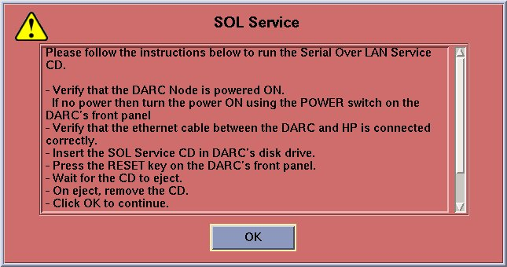
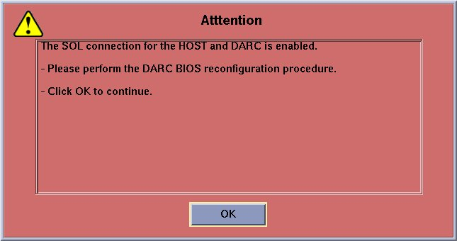

Operating Documentation
Direction 5193755-800, Rev# 8
BrightSpeed (Ltd. Access) Service Methods - Adv
Operating Documentation |
| Last Revised: | 23 October 2006 |
Occasionally the VDARC/DARC Node OS will not load. This module steps through troubleshooting procedures to help diagnose and correct the problem.
This document applies to both DARC and VDARC Nodes. However, for simplicity's sake, all references will be simply “DARC Node”.
The dpcproxy server on the HOST needs to be running and the DARC Node LAN led should not be ‘hard-on’ as this indicates the need to load the Serial Over LAN (SOL) CD (p/n 5193458) into the DARC Node and select the DARC Node reset button to accomplish the SOL load.
The DARC Node OS load still utilizes the telnet process and the above items are needed to make sure that happens.
The power cord must be installed and rear circuit breaker set to “ON” at the rear of the DARC Node. VAC Line Power is assumed to be “good”.
Verify the DARC Node front panel LAN led is not hard on - if it is then:
Insert the SOL CD into the DARC Node and press the reset switch.
The SOL CD will automatically eject when completed (after approximately 2 minutes or less).
| NOTE: | Reset Work-Around: Insert the SOL CD into the DARC Node and press the DARC Node Power Button on the front of the DARC Node. The SOL CD will write/FLASH. |
| NOTE: | Telnet (telnet localhost 623) will not be successful unless the dpcproxy server on the HOST is running. If the dpcproxy server is running the system will display that it is already running after the command line is entered or it will inform the user it has been started. |
Open a Unix Shell
{ctuser@hostname} su –
Password: #bigguy
[root@hostname] service cliservice start
Verify the telnet command from Host to the VDARC Node is successful:
[root@hostname] telnet localhost 623
Trying 127.0.0.1...
Connected to localhost.
Escape character is '^]'
Server: darc
Username: <Enter>
Password: <Enter>
Login successful ← *** Indicates the SOL connection is established ***
At the dpccli> prompt, type: exit
Serial Over LAN
Intelligent Platform Management Interface
Baseboard Management Controller
Host Computer
Reference name for the original DARC/DARC2/VDARC/IG/VIG Nodes
New style DARC/DARC2/VDARC/IG/VIG Nodes
| NOTE: | Serial Over LAN version 2 (part number 5193458) works ONLY with 4.3.16 or prior OS Software. |
The SOL CD restores the Baseboard Management Controller (BMC) settings on the DARC/DARC2/VDARC Node. The BMC is the core of the Intelligent Platform Management Interface (IPMI). BMC/IPMI allows access to the DARC CPU via the OC/Host network interface provided the respective OC/Host and DARC interfaces are connected (Ethernet /LAN cable connection).
For successful communication between the OC/Host and the BMC on the DARC, the BMC must have user access enabled and have the address set to the same subnet as the OC/Host network interface. The DARC does not need to be on for communication to occur, however, the power cord must be inserted at the rear of the DARC Node being used and if a rear circuit breaker is present – it must be set to on.
The DARC BMC address is set to IP address of the DARC network interface (default 172.16.0.2) that is connected to the OC/Host network interface (default 172.16.0.1).
SOL access between the DARC and OC/Host is accomplished using the BMC on the DARC. SOL is typically used for accessing the BIOS menu on the DARC. SOL can also be used for cycling DARC power.
During the DARC OS load the script will attempt the DARC Subnet 172.16.0.2 address. If that fails the 169.254.0 alternate DARC Subnet address (as specified in the LFC procedure) will be tried. If an address other than 172.16.0.2 or 169.254.0.2 is used or another issue is present, a pop-up is present on the monitor and instructs the user to install the SOL CD. Do not close any windows at this time.
Illustration 1: SOL Service Pop-Up

The SOL CD is installed in the DARC Node and the front panel buttons are utilized to reset the DARC Node. The SOL is then flashed/written to the BMC on the DARC Node. The SOL CD is ejected automatically. The [OK] button on the pop-up is then selected and the DARC OS load continues.
If the DARC OS load fails again while attempting to utilize the IPMI Tool an additional pop-up will appear requesting the user to verify /set the DARC Node BOOT BIOS Utility Boot Order as specified in the LFC procedure for the specific type of DARC Node being utilized.
Illustration 2: SOL Attention Pop-Up

Version 2 of the SOL disk now requests a DHCP address from the OC/Host in an attempt to match the DARC BMC address with the OC/Host subnet address. When the SOL Disk is booted it requests and receives a DHCP address, sets the BMC address and enables user access. It modifies a file on the DARC hard drive so the bmcscript service doesn't erroneously reset the BMC address.
If the OC and DARC are not connected, or a DHCP address is not received, the SOL disk will set the BMC address to 172.16.0.2. The SOL disk is then ejected and a reset issued to the DARC Node.
Version 2 of the SOL disk will work with either 'Westville' or 'Jarrell' DARC Node CPUs. The difference between the Westville and Jarrell CPU from a BMC aspect is the BMC channel used. On the Westville CPUs, BMC channel 7 is used while on the Jarrell CPUs BMC channel number 1 is used. The SOL disk detects the BMC channel being used and sets the address accordingly.
For a basic tutorial on SOL, IPMI, CLI, Network Proxy and more, please refer to the Serial Over LAN Tutorial.